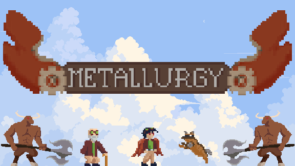
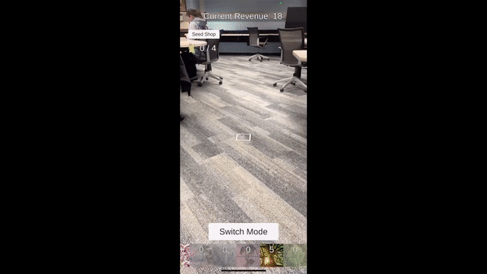
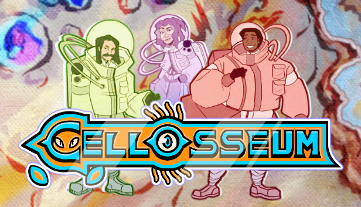
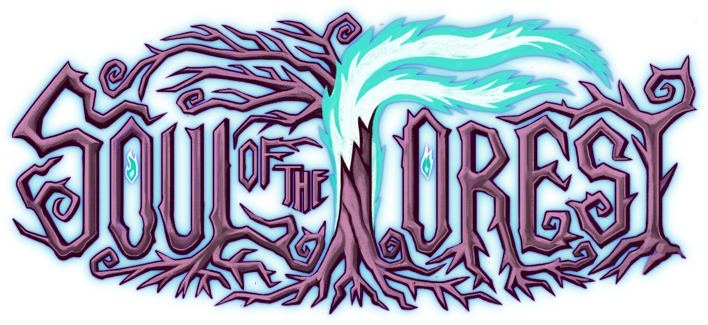

KT LoPorto
Audio Programmer
Audio Programmer

This CSE Simulator was created with Unreal Engine 5 on the VR platform throughout a 3 week process. It is a recreation of the CAEN lab on the first floor of the Bob and Betty Beyster building on UofM-Ann Arbor's North Campus. Within the lab, players can interact with various objects, including functional lightswitches, firealarms, whiteboards, etc. This project also implements the custom feature of a "take a break" button which transports the player to a tropical vacation and back when pressed. Throughout the process, I worked a lot with blueprint class inheritance, events, and materials.
Unity 2D, Ableton Live, Wwise, GitHub, Atlassian Suite

Metallurgy was created with Unity and C# on a team of 5 developers throughout a 6 week process. Metallurgy is a rogue-like action platformer where a player must reach the top of a tower using a pair of upgradable wings. Among other systems, Metallurgy features procedural world generation, an upgraded tree system, and a unique weather mechanic to augment movement. Throughout the process I primarily worked on art and implementation, various dialogue and cutscenes, and the upgrade system.
Unity 2D, Unity Animator, Unity Timeline and Cinemachine, GitHub, Atlassian Suite

A2 Go! is an augmented reality mobile game created with Unity's AR platform and support from MapBoxSDK. In this app, players can plant and grow trees to accumulate tourism revenue, discover landmarks around the Ann Arbor area, purchase 6 unique types of seeds from the seed shop, and battle ghosts that threaten the trees. This project also features use of the UnityEngine.AI library with 4 discoverable companions that can join the player on their journey around the city. In this project, I built the tree planting/growth system, the ghost enemy AI, cross-scene development, and the companion pathfinding AI.
Unity Engine AR Mode, MapBox API, GitLab, Atlassian Suite

Cellosseum is a single-player bullet hell rogue-like created with Unity within a 38-person studio. On this project, I was part of the quality assurance/ programming team where I worked primarily on the player upgrade and mod system. I also was responsible for managing weekly play testing sessions, where I would report bugs and undesired behavior using Confluence and Jira software.
Unity 3D, Unity Timeline and Cinemachine, GitHub, Atlassian Suite

SpeakVR is a virtual reality application built using Unreal Engine 5 within a 5 person team over a 4 week development period. Using audio processing, SpeakVR provides a personalized experience that will analyze a speech performance and offer guidance and feedback through an interactive audience. At the end of each speech, the application evaluates the user's performance on criteria such as speech flow, vocal projection, dynamic gestures, and audience interaction. Throughout the process, I worked on implementing the tutorial, customizable speeches, and the speech analytics and grading system.
Unreal Engine 5 VR Mode, GitLab, Atlassian Suite, Blender

Soul of the Forest is a single player turn-based RPG built in Unity with a 50-person studio. On this project, I was one of the co-leads in the programming team and the manager of the quality assurance team.
My main responsibilities were managing weekly playtesting sessions, performing pull request and code reviews, and leading development on the battle system.
Unity 2D, Unity Timeline and Cinemachine, GitHub, Atlassian Suite
The battle system was largely inspired by Toby Fox’s Undertale. In our rendition, both the player and enemy have unique “minigames” that correspond to specific moves. The flow of gameplay was controlled by a status effect system that I personally engineered. Similar to Omocat’s Omori, specific moves would give either the player or the enemy certain “effects” which could heighten or lower their efficacy in battle. Below are examples of the battle gameplay: